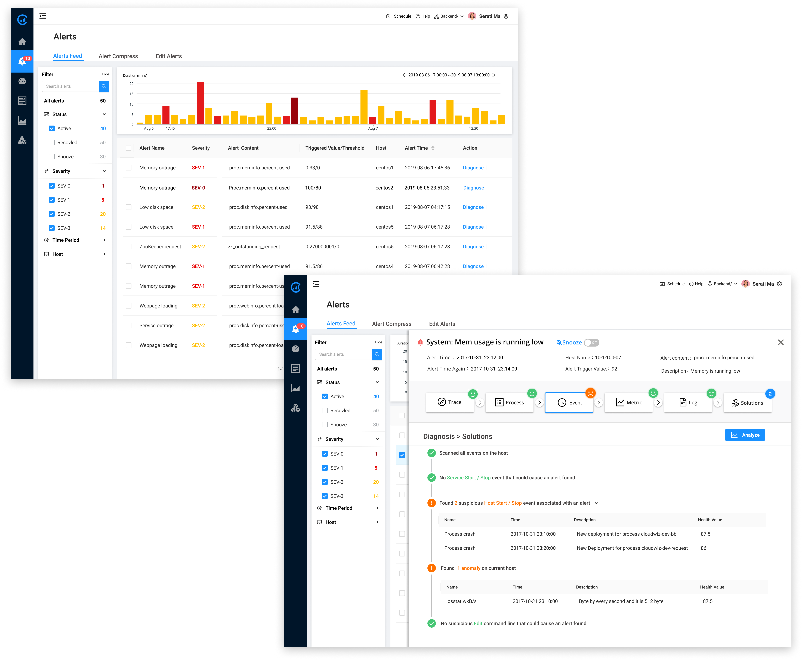
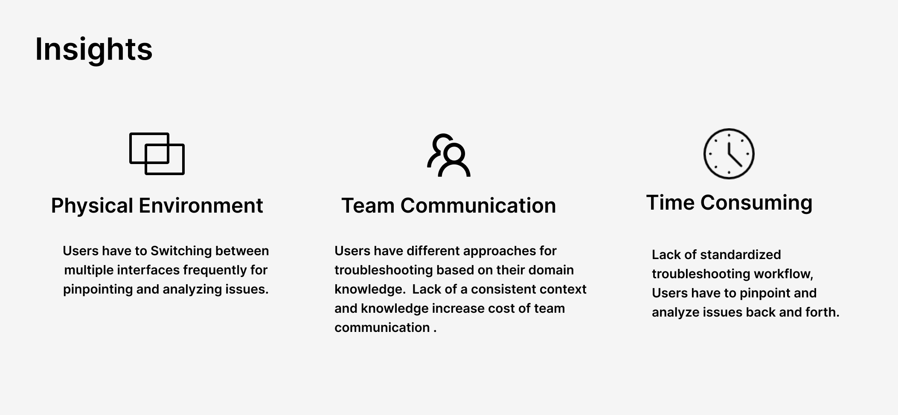
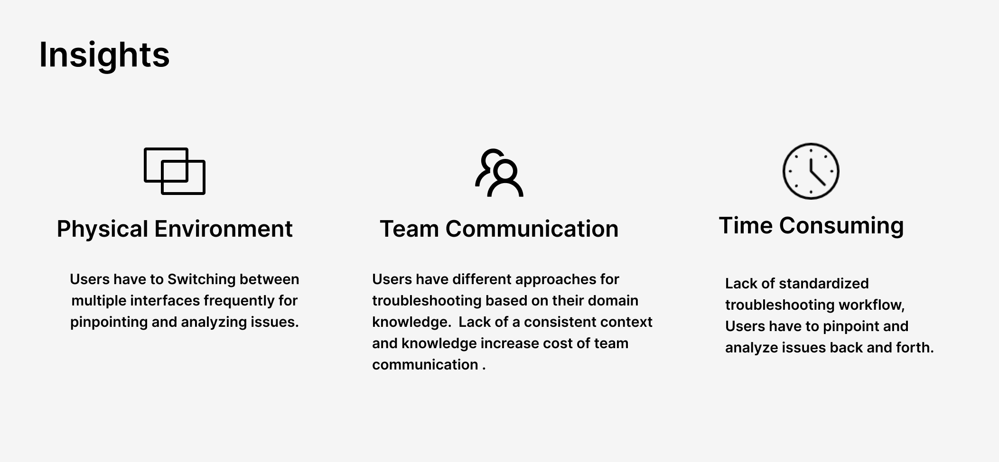

Redesign Troubleshooting with AI
Project Overview
As more features were added to optimize our MVP product, the platform really boosted users' capabilities of their IT operation management. However, these new features challenged the current functional usability and navigational UI that weren't able to support the accretion of functions for the products. As the troubleshooting issues were influenced the most by the growth of features, I led and drove the design process to simplify and optimize the troubleshooting workflow. This redesign led to a 90% troubleshooting completion rate and an 85% user satisfaction rate.
My Role
As the sole designer in the team, I drove an iterative end-to-end user experience design to transfer the complex concepts to clear and succinct design deliverables and partnered with PMs and engineers to bring the design crafts to life.
Time Period
6 Months
Challenge
BRING ORDER OUT OF CHAOS
In 2016, Cloudwiz launched its first AI-powered application performance platform. After 6 months, the new product appealed to a lot of users to sign up for a trial. After the trial period, almost two-thirds of users didn't come back. One of the main reasons was that lack of onboarding troubleshooting process hindered users to further perform analysis and drop out in the middle of the way. When users troubleshooted, their journey was like finding and bringing order out of chaos.
Our design challenge was to create an effective onboarding troubleshooting experience and build a standard diagnosis and solution closed loop.
Strategy
Hunting for a pattern through iteration
When it comes to issues, different people have different strategies and workflows. In order to boost efficiency of the troubleshooting process, we decided to identify a troubleshooting pattern that covered the common areas that most issues hit. Through surveys and user interviews, we found that Top N processes, Logs, Metrics, Events were the most common sections where IT operation professionals must check when troubleshooting.
Finding a pattern and building a standardized workflow not only boost speed of troubleshooting, and also reconcile with customization and personalized needs from clients.
.jpg)
Solution
Automate troubleshooting at one stop in a few seconds
Cloudwiz's core value is to leverage machine learning driven technology to debug and optimize performance proactively across the entire stack of the system. With this AI-powered advantage, we designed an automatic troubleshooting processing closed loop, which provides users insightful solutions.
Feature One
The refreshing alerting page provided advanced facet search options and time-series diagram, which can help users identify and resolve issues faster.
Feature Two
Initiating a standard troubleshooting process shortens users' learning path and enables users to pinpoint problems more efficiently; users can view problem details in a clear way at one stop.
Feature Three
AI-powered recommended solutions provides users a insightful perspective and applicable actions.
Final Version Demo

Frame the problem
When I joined Cloudwiz, it's MVP product had been launched for a few months and it served five large enterprise clients. As more features were added to optimize our MVP product, the number of new users increased accordingly. At the same time, we found that users didn't come back after the trial period. One of the main reasons was that a lack of onboarding hindered users to further perform analysis, and dropped in the middle of the way.
Based on the users' feedback from our sales engineers, we drew a conclusion: a lack of troubleshooting onboarding was the reason for low convention rate and high dropout rate. Before I tackled the design problem, I asked myself three questions:
- What are the main factors or areas that cause to trigger alerts?
- Is there a standard troubleshooting workflow that could handle all issues?
- Supposed there is a standard workflow, How can we onboard users through the standard workflow for troubleshooting?
RESEARCH
At a startup company, doing user research within a tight budget and limited timeframe was always considered a challenge. In order to get a better understanding of how users troubleshoot issues, I conducted user interviews with two clients and one subject matter expert at our company. At the same time, I conducted a competitive analysis of the leading APM products such as datadog, newrelic, dynatrace and splunk, and found that the leading APM product consolidated all relevant information into a dashboard.
 

In order to ensure our Cloudwiz's stakeholders gain empathy with our customers, I created a journey map and mapped out two typical workflows, It helped us understand the impact of troubleshooting onboarding experience from a high-level perspective. It also helped us define our design goal and success metrics of troubleshooting experience.

After reviewing these deliverables with PM and engineer teams, we found the process, log, event, and metrics were the main areas where issues originated. In order to boost the efficiency of the troubleshooting process, we simplified the troubleshooting workflow and focused on the main area. So we decided to weave the main areas into a problem solution closed loop, which increased the value of our product.
Design Iteration
Considering the feedback mainly came from novice users, my first design solution aimed to walk users through each troubleshooting step all the way to the recommended solutions. This design solution tied all main features into a standard workflow, which not only allowed users to dive at each step, and more importantly helped users to establish a systematic mind of troubleshooting.

For the experienced users, I designed a dashboard view for each issue, which contained a high-level overview of key metrics and recommended solutions with graph-based panels covering four main troubleshooting areas. The purpose of the design solution is to provide users a full control of troubleshooting based on prioritized information.


automate troubleshooting process
Since the two design versions has some limitions to greatly improve the efficiency of the whole troubleshooting workflow, I got inspired from the backend engineer that we could surface the automated troubleshooting process upfront. Then I turned this idea into a final design solution. When users got into the issue detail page, the system would automatically scan and signaled the problem areas and finally demonstrate the recommended solution options.


Results and Impact
This design not only largely shortened the time spent on troubleshooting, it also attracted users to pay more attention to the recommended solutions and correlation analysis, which were the core valuable features of our product. The result proved my assumption that the solution largely increased efficiency of the troubleshooting process and gained a 35% increase in user satisfaction rate.